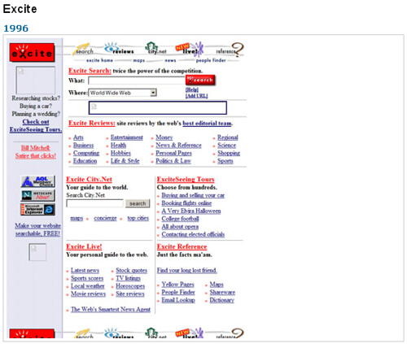
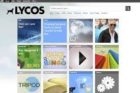
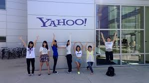
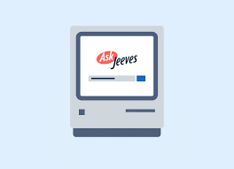
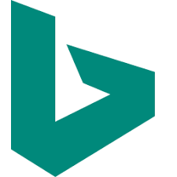
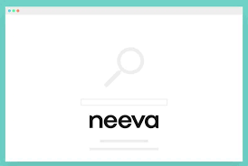

Excite

Excite was one of the first search engines to process natural language queries. It launched in 1995, along
with AltaVista and a host of less-known sites like MetaCrawler. Excite began as a university project by six
Stanford students in 1993. They analyzed statistical relationships of word patterns to search the Internet.
As Excite grew, it acquired competitors WebCrawler and Magellan in 1996. Several years later, Excite had
partnered with MSN and Netscape to provide search services. In 1999, Excite was acquired by broadband
provider @Home.com for $6.5 billion and renamed Excite@Home. Excite rapidly lost search traffic to Google
following its launch, and Excite@Home filed for bankruptcy in October 2001. InfoSpace bought its assets and
trademarks for $10 million, and Ask Jeeves purchased the Excite.com portal in 2004.
Lycos

Lycos was another search engine and web portal established in 1994. It was spun out of a research project by
Michael Loren Mauldin of Carnegie Mellon University. It categorized keywords with prefixes and word
proximity, and the new company focused on making the company an ad-supported Web portal. Lycos enjoyed rapid
growth and went public in 1996 with a market value of $300 million. By 1999, Lycos had become the most
visited page on the Web, with a presence in more than 40 countries. In 2000, Lycos was acquired for $12.5
billion by Terra Networks, part of the Spanish telecom company Telefónica. As Google attained dominance,
Lycos abandoned its search engine and was sold in 2004 to Daum Communications in Korea as a collection of
entertainment and social networking websites.
Yahoo!

With an idea sparked by their fantasy basketball league, Stanford graduate students David Filo and Jerry
Yang launched "Jerry and David's guide to the World Wide Web" in 1994. It comprised a human-edited directory
of the World Wide Web. As its popularity grew, they changed the name to Yahoo! With an investment from
Sequoia Capital, Yahoo! quickly became the most popular online directory and search engine on the Web. As
its portal expanded into content and other services, Yahoo! lost site of its search function, eventually
ceding that ground to Google. After rejecting a $47 bn takeover offer from Microsoft in 2008, Yahoo!
eventually sold itself to Verizon in 2016 for less than $5 bn.
AskJeeves

AskJeeves focused on the use of human editors for search queries. It was launched in 1997 by Garret Gruener
and David Warthen. Unlike Yahoo, AltaVista, and Excite, AskJeeves did not focus on keywords. It interpreted
the natural language of a question, yielding more relevant results. The site rapidly gained favor with the
growing number of non-technical Web users. AskJeeves’ human editors catalogued prominent websites, alongside
paid listings and partner sites. Starting in 2000, AskJeeves developed its own search technology through the
acquisitions of Direct Hit in 2000, Teoma in 2001, and Excite in 2004. AskJeeves was acquired by Barry
Diller’s InterActiveCorp (IAC) in 2005, but with its emphasis on paid listings, it struggled to compete
against Google, Yahoo!, and MSN Search. The site was rebranded to Ask.com in 2006 and licenced its search
function to another provider in 2010.
Google

Google was the brainchild of Larry Page and Sergey Brin, two Stanford PhD students who attempted to catalog
and search the new World Wide Web. They developed an algorithm that analyzed web page relevance, based on
the links connecting pages to each other. They launched Google on Stanford’s website (google.stanford.edu)
in 1996, and the traffic overwhelmed Stanford’s network. After failing to licence the technology to another
search site, they launched Google.com in 1997 with the backing of several Silicon Valley angel investors.
While it featured a simple homepage, Google made its mission to “organize all the world’s information”. With
radically better search technology, Google quickly became the Internet’s most powerful search engine. In
1999, AOL selected Google as its search partner. Google now generates over $60 bn of annual revenue from
advertising, cloud computing, software, and hardware sales.
Microsoft Bing

As the search category thrived, Microsoft introduced MSN Search in 1998. MSN used Inktomi technology (which
also powered Yahoo!) and for a short time, AltaVista. Microsoft developed the ancestor of its search engine
in 2004, embedded in its browser. MSN Search was renamed Windows Live in 2006. Microsoft licensed its
technology to other web portals, search engines and ISPs. In 2009, Microsoft launched Bing as a direct
competitor to Google. Bing’s algorithm placed inline search suggestions for related searches directly in the
result set. Bing launched Social Sidebar in 2012, which showed results through the lens of user social
networks. Bing released a mobile-friendly algorithm update in 2015. Today Bing is the second-largest search
engine worldwide with over 14 billion monthly search queries.
DuckDuckGo
As a backlash emerges regarding user privacy, a new generation of search engines is evolving that don’t
track a user’s search history. DuckDuckGo was founded by Gabriel Weinberg in 2008. Coming off a failed
social networking start-up, the site’s search results were mostly APIs of other search engines results. In
DuckDuckGo’s model, user searches weren’t tracked like other search engines. The site attracted a small, but
loyal following of privacy-concerned users. Union Square Ventures invested in the company in 2011 to support
private search engines, and by 2013, DuckDuckGo was serving 4 million searches per day. Firefox and Safari
offered DuckDuckGo as a default search engine option in their browsers in 2014, and Google Chrome followed
suit in 2019. DuckDuckGo now answers over 100 million searches per day, making revenue from ads that don’t
involve tracking individual users.
Neeva

A new entrant into the search market is Neeva, which offers a no advertising subscription service.
Launched in 2021, the Neeva search engine was founded by former Google executives, Sridhar Ramaswamy and
Vivek Raghunathan. They received $77 million of funding, led by Greylock and Sequoia Capital. Boasting an
improved user experience, Neeva treats the user as its customer and can make decisions based on their needs,
rather than advertisers. Neeva.com includes personalized widgets for news, sports, weather, and stock
prices. For this, they charge $4.95 per month.